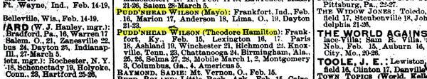
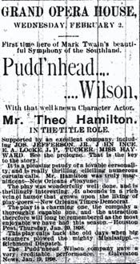

| The first three Pudd'nheads (left to right): Frank Mayo (from Chicago Tribune 9 June 1896); Theodore Hamilton (Chicago Tribune 27 December 1896); Edwin Mayo (Syracuse Herald 24 October 1897). |
||
|
The table below allows you to track the performances of Frank Mayo's dramatization of Pudd'head Wilson from its out-of-town opening in Hartford (8 April 1895) to the last of Edwin Mayo's appearances in Montreal, Canada (mid-February 1900). During this period the show played in over 400 cities and towns, often for a week or more, more often for two or three nights, most often (especially at the end of this run) for a one-night stand. Mayo the father died on the road, on his way to what would have been his 42nd city as "Pudd'nhead." Mayo the son similarly died while on tour, after playing "Pudd'nhead" in almost 300 places. In between, during the 1896 season and again in early 1898 when a second company was created to tour the South, Theodore Hamilton played the lead. (On the schedule, this company's productions are marked with a §.) Edwin's death provides the stopping point for this itinerary, but in fact it was not long after that event that the drama went back on tour, with an actor named Burr Mackintosh as Wilson, and performances of the play continued to send royalties to MT's estate for years after his death.  This itinerary was constructed mainly from the listings of scheduled performances that appeared every week in the theatrical paper, the New York Dramatic Mirror. The righthand column below indicates the issue of the paper in which a performance was first noted. When the Date(s) in the neighboring column is a link, clicking on it will pop up a typically brief notice of how well the play did from a later edition of the paper. When the date is also marked with a †, the text that pops up includes local reviews of the production; a ‡ indicates that you can also read publicitly notices that appeared in local papers ahead of a production. Written and published for people in the theater business, the Mirror worked hard to be accurate about what was playing where and how well it did; several times a production announced in its "Dates Ahead" index was later noted as "Cancelled" -- such retractions for Mayo's play, when we found them, are indicated below in notes. (The notes, marked with a *, also describe a few other details from the tours.) But it's likely that there are some inaccuracies in this list. The most conspicuous instance of this uncertainty concerns the southern tour. Various issues of the Mirror listed dates for Hamilton's company through March 26th, 1898, with performances in Athens, Macon, Decatur, Savannah, Charleston, Columbia, Wilmington, Goldsboro, Durham, Roanoke, Lynchburg, Charlottesville and Richmond; only the Savannah production is explicitly "Cancelled," but it seems clear -- both from stories out of Atlanta about Hamilton going north and from searches of the papers in many of those cities and towns -- that the southern company came off the road on March 8th.  Reviews of the play from around the country help us appreciate the way MT's contemporaries understood Pudd'nhead Wilson, at least in Mayo's adaptation (although there were no complaints that the play mis-represented the novel, and many reviewers say Mayo's script improves MT's text). And it is interesting to compare the way the play was promoted and received in the South with its success in the rest of the country. Advance notices, inserted into local papers by agents working for the Mayos, emphasize certain features of play -- its "quaint" humor, the appeal of Wilson's success story, its "authenticity" as a representation of the past, its previous success on Broadway -- in both places. But while northern notices often play up the "science" of fingerprints as a leading feature of the play, southern notices emphasize Hamilton's credentials as a former Confederate officer and say more about its handling of "the question of negro character." Reviews are mostly favorable in every region, though reviewers in Nashville and Mobile objected to various aspects of the depiction of southern culture. As the impressive list of performances here suggests, it is probable that during the last years of the 19th century, more people saw Pudd'nhead Wilson performed on stage than read MT's text. When the play came to Washington, D.C., for the second time, in the fall 1896, the audience included the President of the United States and members of his administration. How the play might have affected what contemporary Americans thought MT's story was saying about race, and thus helped shape national and regional racial policies, is one good question to keep in mind as you trace its reception in the following performances. Defining "white" and "black" and the races' respective places in the social order was a major legal and legislative issue during the years Pudd'nhead Wilson toured the country. It was on 18 May 1896, for instance, that the Supreme Court decided in Plessy v Ferguson that "separate but equal" segregated facilities in the South were constitutional. That same week, Frank Mayo and company were performing the play in Salt Lake City, where the enthusiastic reviewer for the Herald praised especially the acting of the Frank Campeau and Eleanor Moretti as Tom and Roxy. This son and mother are even "whiter" than Homer Plessy (he was seven-eighths white; Roxy is fifteenth-sixteenths and Tom thirty-one thirty-seconds), but the reviewer appreciates the way their essential "blackness" controls their characterizations: "Nothing," he writes on May 21, "could exceed the crafty depravity with which the former invested the role of the slave, through whose nature the ignoble instincts would assert themselves despite training and education, or the true, Creole indolence, weakness and ambition that the latter imparted to the negro mother." While a few reviews below view the play as about "the evils . . . of slavery days," the opinion of another reviewer that "The motif of the piece is in the showing that blood will tell, however disguised" was much more common. One New Orleans reviewer went so far as to say that "the theme" of both MT's book and Mayo's play "is the exemplification of the moral superiority of the white race over the colored." |